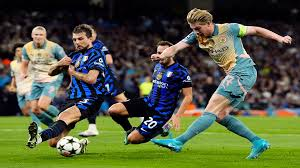

Blog Posts
Match Review: Champions League
An exciting night of Champions League football as the top clubs in Europe battled it out for a place in the next round.
Arsenal continued their impressive form with a dominant performance against Real Madrid, while Bayern Munich edged past Juventus in a thrilling encounter. Liverpool's attacking prowess was on full display as they dismantled Porto, while Tottenham secured a hard-fought victory over PSG.
Transfer Window: Who's Moving This Summer?
The summer transfer window is always one of the most exciting times in football.
Clubs across Europe are already lining up their targets as managers look to
strengthen their squads ahead of next season.
With big money moves expected from the Premier League and La Liga, players like
Florian Wirtz and Lamine Yamal are being linked with moves to some of Europe's
biggest clubs. Manchester United and Arsenal are both expected to be active in
the market, while Real Madrid continue their pursuit of top targets to replace
ageing squad members.
It promises to be a busy summer with plenty of surprises along the way.
Champions League Preview: Who Can Win It?
As the Champions League enters its knockout stages, the field is beginning to
narrow. Several favourites have already been knocked out, leaving the door open
for some surprise contenders to make a run at the trophy.
Arsenal look the most consistent side remaining, with their defensive record
standing out above everyone else. Bayern Munich bring experience and quality
throughout the squad, while Liverpool's attacking firepower makes them dangerous
on any given night.
Our prediction? Arsenal to finally end their long wait for European glory and
lift the trophy in Budapest this May.
Opinion: Best Strikers of 2026
A look at the top strikers in world football right now and what makes them stand out from the rest.
- Erling Haaland
- Kylian Mbappé
- Harry Kane
- Vinicius Jr
- Lamine Yamal
What Makes a Great Striker?

Great strikers share a number of key qualities. Clinical finishing is the
obvious one, but movement and positioning are equally important.
- Clinical finishing in front of goal
- Movement and positioning
- Link-up play with teammates
- Composure under pressure